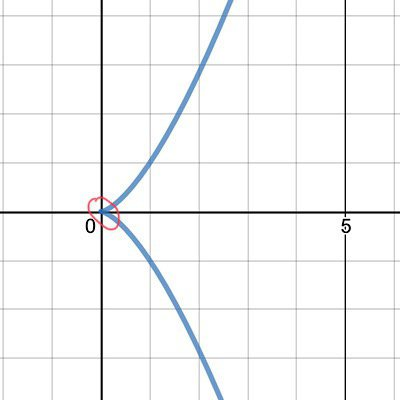
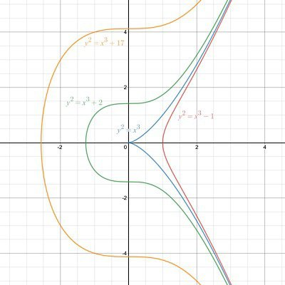
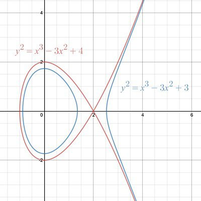

Is 64 the first perfect square and a perfect cube? Is it the only one?
Come, I want to show you something.
If x is any integer, then x^3 is what you’d call a perfect cube. And if y is any integer, then y^2 is what you’d call a perfect square. If a number is both a perfect square and a perfect cube, then this number is both y^2 and x^3, and since it’s the same number, we can write
\displaystyle y^2 = x^3.
What’s the first solution? We can restrict our attention to nonnegative values of x, since negative ones are clearly out of the question. The first possible candidate is x=0, and it kinda works: 0^2=0^3, and indeed zero is a perfect square and a perfect cube.
But that’s a little boring. We move on: how about x=1? Of course, 1^2=1^3 is also a perfect square which is a perfect cube. So 64 isn’t quite the first one, nor the only one, but perhaps it’s the first interesting one. It’s what we get when we pick x=4. What happened to x=2 and x=3? Of course, they don’t work: 8 and 27 aren’t squares. Why did 0,1 and 4 work for x? Ah, of course: they worked because they are themselves squares. If we take x=9, for instance, then x=3^2, so x^3=3^6, and that’s a perfect square! It’s the square of y=3^3=27, and the number which is both a perfect square and a perfect cube is 3^6=729.
We can keep going, of course: the square-cube numbers go 0,1,64,729,4096,15625 and so on. More simply, they are 0^6,1^6,2^6,3^6,4^6,5^6 and so on. All the sixth powers.
Infinitely many.
So no, 64 isn’t the only one and isn’t one of a few. It’s one of infinitely many sixth powers, which are numbers that are simultaneously perfect squares and perfect cubes.
But this isn’t what I wanted to show you. What I wanted to show you is what happens when we go back to y^2=x^3 and forget that we are talking about integers. It’s a simple relation, and we can easily plot it: we let x,y be real numbers and we plot the points (x,y) with y^2=x^3.
What we get is mostly a nice, smooth curve, but there’s a particular point where it’s not so nice and smooth.

The point (0,0) is called a cusp. It’s very obviously different from all other points, where the curve is as smooth as a baby’s cheek. It’s just this one, sharp, pointy cusp at (0,0). And believe it or not, this cusp is the reason we have infinitely many perfect squares that are perfect cubes.
What do I mean by that?
Suppose we change the equation just slightly. Instead of y^2=x^3 we look at y^2=x^3+1, or y^2=x^3-1, or y^2=x^3+17, whatever. Here are a few of them:

In blue we have the original, spikey y^2=x^3. The red, green and orange curves are everywhere smooth as silk. And you know what else? The equations y^2=x^3-1, y^2=x^3+2 and y^2=x^3+17 don’t have infinitely many integer solutions. They only have finitely many (sometimes none at all).
And guess what else?
Proving this is hard. Very hard. Finding the solutions for each of those is hard. Sometimes just tricky, sometimes really hard, and sometimes exceedingly, insanely hard.
The equation y^2=x^3+k is called Mordell’s equation, and it’s like a different episode for every k. The only k for which there’s a cusp is also the only k for which there are infinitely many solutions, and also the only k which is easy to handle. For every other k, it’s hard. We’ve actually seen a few Mordells here on Quora, like this one.
To the untrained eye, the equations y^2=x^3 and y^2=x^3+1 seem almost identical. What’s the difference? We just added a silly +1. The real trouble here are those variables, and squares, and cubes, who cares about a measly +1? But imagine that: if we seek integer solutions, solving y^2=x^3 is an elementary exercise, and solving y^2=x^3+1 is, I would guess, beyond the abilities of most professional mathematicians, unless they bring in some cavalry for help – a number theorist colleague, or a few advanced papers and books.
Let me drive this home. Consider
\displaystyle \begin{aligned} y^2 &= x^3-3x^2+3 \\ y^2 &= x^3-3x^2+4 \end{aligned}
Just by looking at the equations, can you guess which one is trivial and which one is very difficult to solve in integers? No? I wouldn’t either. But let’s look at their graphs:

See the difference? The blue one is smooth everywhere, and very difficult to solve in integers. The red one has a singularity: that intersection at (2,0). And you can take it as a nice, fun exercise to show that it has infinitely many integer solutions, and they are very easy to describe. Find them!
Much more generally, cubic equations in two variables with integer coefficients are either smooth or they have singularities. When they are smooth, they are called elliptic curves, and then they can only have finitely many integer solutions, and proving this is very far from easy. On the other hand, when they are singular, they are much easier to handle. They are called “rational” in this case, for ancient reasons, and they can be parametrized very simply, like the parametrization (y=t^3,x=t^2) we’ve found for the original question. And those parametrizations allow for infinitely many integer solutions.
This is one chapter of an epic tale, as deep as an ocean: the geometry of algebraic equations is connected to their arithmetic in wildly unexpected ways. The Weil conjectures, which shaped a huge amount of math in the 20th century, are another tome in this saga.
Where were we? Ah, yes: Is 64 the first perfect square and perfect cube? No. Is it the only one? No. Are there finitely many such numbers? No. And it’s all because of that tiny little pointy, spikey cusp on the graph of y^2=x^3.
The queen of mathematics is just full of surprises.